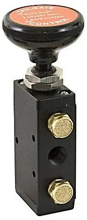
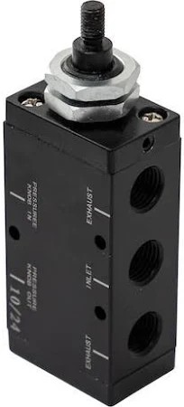
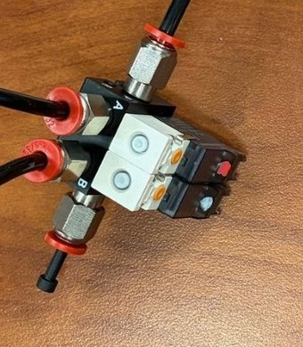

Last lesson, air pushed a cylinder. Now we decide when it moves and which way it goes.
A dump truck’s tailgate is opened and closed by an air cylinder. The driver pushes a knob in the cab to open the tailgate and pulls the knob to close it. The tailgate must stay open while the bed dumps, even after the driver lets go.
Nobody pushes on a syringe in the cab. Something has to decide which end of the cylinder gets air, where the used air goes, and how the choice stays put.
A dump truck driver pushes a knob to open the tailgate and pulls it to close it, and the tailgate must stay open after the driver lets go.
Describe your idea: what part would decide where the air goes, and how would it stay in place?


Here is a real answer: a tailgate control valve. Its labels name the ports: an inlet for supply air, two exhausts with brass mufflers to quiet the used air, and two cylinder ports marked “pressure knob in” and “pressure knob out.”
Push the knob in and air goes to one cylinder port; pull it out and air goes to the other. That is 5 ports and 2 positions, so it is a 5/2 valve.
It stays wherever you leave it, which is what the tailgate needs: the gate stays open after the driver lets go. Other jobs need the opposite, a button that springs back the moment you release it.
A valve is a traffic controller for air. Its ports are the openings where tubes connect, and its positions are the flow patterns it can switch between. A valve’s name gives both numbers: a 3/2 valve has 3 ports and 2 positions.
Industrial valves usually number their ports, and VEX letters them. Either way, you must trace the tubes to know what each port actually feeds.
1. A normally closed 3/2 valve feeds a single-acting cylinder with a spring return. Nobody is pressing the button. What is the cylinder doing?
2. Which valve keeps a single-acting cylinder extended until someone presses the button?
A double-acting cylinder needs air in one end while the other end exhausts, and then the reverse. A 5/2 valve does both jobs at once: one supply port, two working ports, two exhausts, and two positions.
Each box shows one position. A solid arrow is supply air flowing to a working port; a dashed arrow is used air leaving through an exhaust.
A 5/2 valve is not more powerful than a 3/2 valve. It controls two cylinder ports at once, so air can push the piston both ways.
A solenoid is a coil of wire that becomes an electromagnet when current flows through it. Its magnetic pull shifts the parts inside the valve into the other position.
When the solenoid turns off, a spring pushes the valve back, or a second solenoid on the other side pulls it back.
That means a controller, such as a factory PLC or the VEX Brain, only has to switch a small electrical signal on or off. The valve handles the large flow of air.

P (supply) P (plugged) Two coilsIt has two P ports (plug the spare, or use it to pass air on to a second solenoid), outlets A and B, and two R exhaust ports joined by one passage through the body.
A driver cable runs from a 3-wire port on the Brain. Its red and black plug goes on the A side, and its green and white plug goes on the B side.
The Brain’s signal picks the side: low, the default, sends air to A, and high sends air to B. It always sends air to one of them, and when the robot stops, it returns to low.
On a VEX robot, the A tube runs to the rod end, and the B tube runs to the cap end. The robot sends a high signal, so air goes to B.
1. What does the cylinder do?
2. Where does the air from the rod end go?
Both valves always send air to one end of the cylinder and exhaust the other. That shared function is why either one can drive a double-acting cylinder, even though the ports look different from the outside.
A team’s VEX robot is acting up. It is supposed to send a low signal when it starts, so the cylinder should start retracted, but the cylinder extends as soon as the robot starts. Find out why without guessing.
Read the ticket, the robot log, and what each cause would look like. Tests cost build time.
Strike out the causes your evidence rules out, then pick the cause and a fix.
Tag the readings that back your diagnosis. Your record scores six things, including safety.
1. A VEX robot sends a low signal when it starts, and the A tube is supposed to run to the rod end. Instead, the cylinder extends when the robot starts. Which of these could cause it?
2. Explain why the VEX solenoid can control a double-acting cylinder even though its ports are laid out differently from an industrial 5/2 valve.